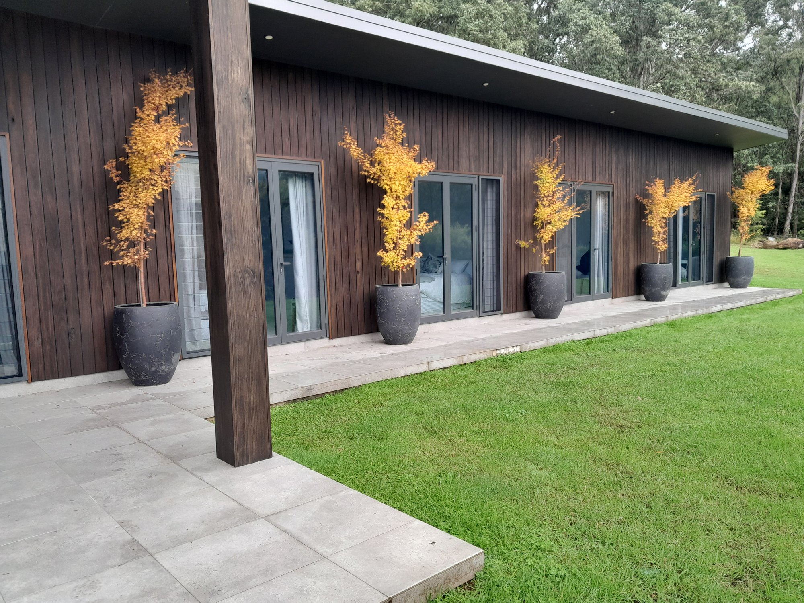

Basin View is a small township on the edge of the Kangaroo Valley ranges, a short drive from the valley floor. It is a working landscape of village blocks, hobby farms and acreage, where the ranges meet the flats. I've worked across this district for years, so I know the properties, the seasons and the specific challenges of gardening here.

Basin View is a small township on the edge of the Kangaroo Valley ranges, a short drive from the valley floor. It is a working landscape of village blocks, hobby farms and acreage, where the ranges meet the flats. I've worked across this district for years, so I know the properties, the seasons and the specific challenges of gardening here.
See basin-view services →Here's what makes this part of the Shoalhaven distinct — and how it affects your garden.
Properties here sit between the coastal flats and the ranges, so aspect is everything. Ridge-top and hill sites catch drying westerlies in cold fronts, while the lower slopes are sheltered but can stay damp. Frost pockets form in low-lying pockets, and summer thunderstorms can bring sudden heavy rain.
Higher ground is free-draining sandy loam over rock, while the creek flats hold deeper, moisture-retentive soils. The sandy sites need mulching and organic matter in summer; the flats can stay waterlogged in winter and need drainage work before planting. Match the plant to the soil you have.
The surrounding Budawang and Murrindindi ranges, the creek flats at the bottom of the valley, and the road that climbs up from the flats toward the valley floor.
The same full range of landscaping, garden maintenance and property work we do in Kangaroo Valley, available right across this part of the district.
Real jobs from properties right here in Basin View and the surrounding district.

Common questions from properties like yours, answered for this part of the district.
Everything you need for this part of the district.
TruLeaf Landscapes
TruLeaf Landscapes
Basin View NSW
0423 325 989
mathew.gardensolutions@gmail.com
Recommended for properties in Basin View and the surrounding district.